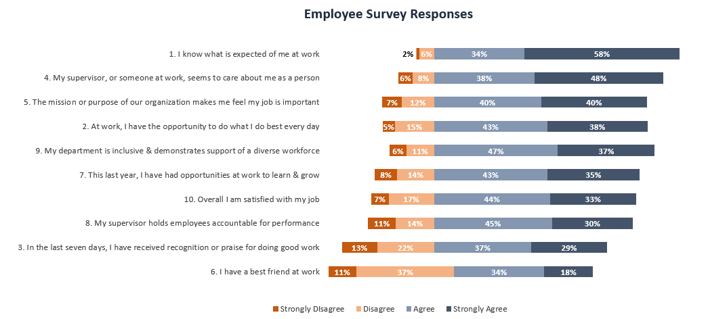

Employee survey results
The problem
Raw survey response counts across ten questions and four answer options aren't easy to read as a table. To see where employees are most positive and where engagement is weakest, the responses need to be turned into something that can be scanned in seconds.
What I did
I built a stacked horizontal bar chart in Excel showing the split of responses (Strongly Disagree, Disagree, Agree, Strongly Agree) for each survey question, then sorted the questions from most to least positive. This turns ten rows of percentages into a single chart that immediately shows the overall sentiment and highlights the areas with the most room for improvement.

The result
A clear, one-glance summary that ranks engagement by question rather than burying the story in a spreadsheet of numbers, making it easy to talk through strengths and priorities with the business.